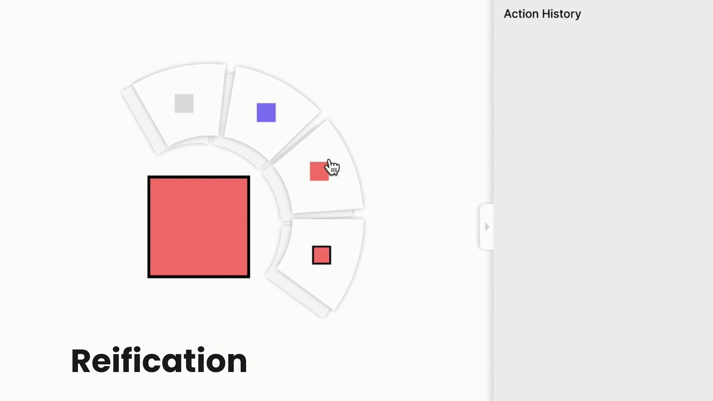
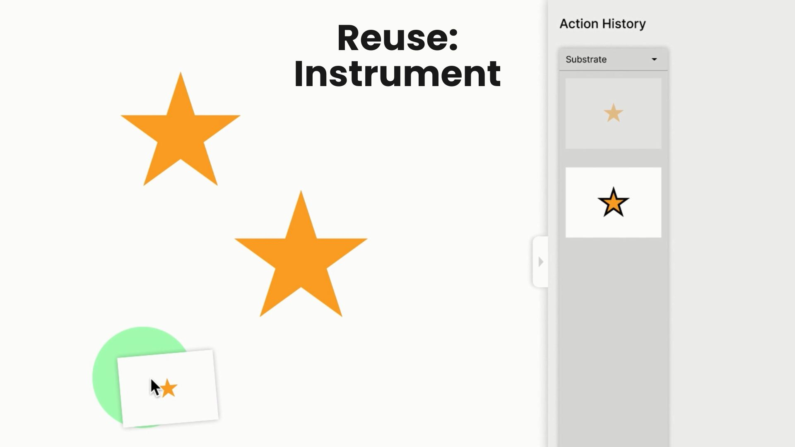
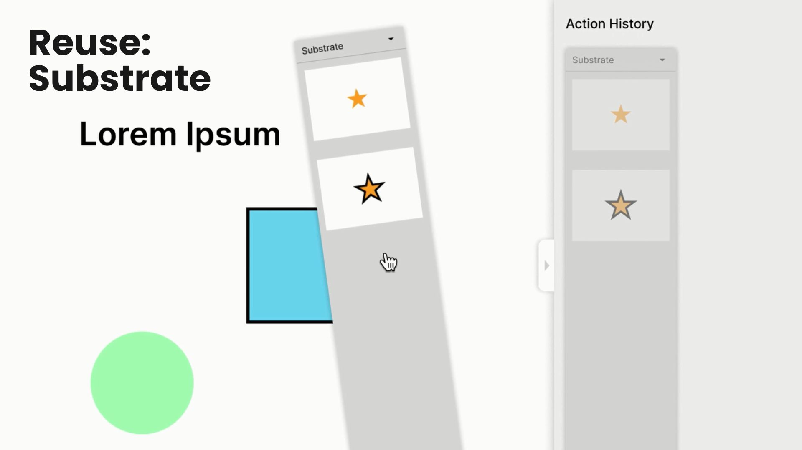
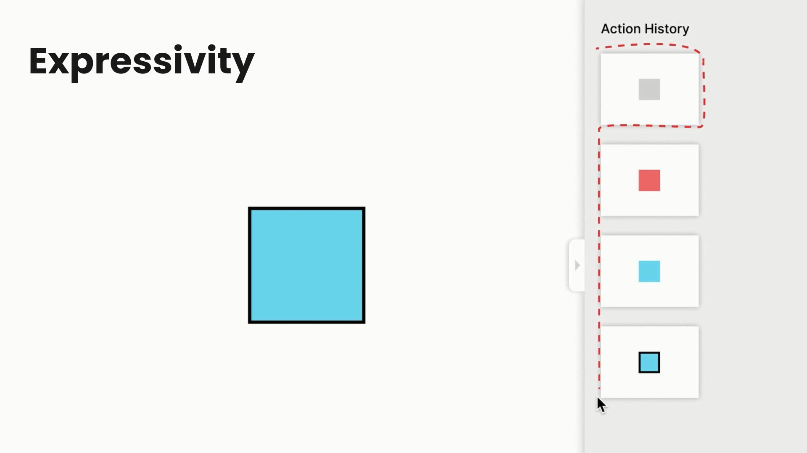
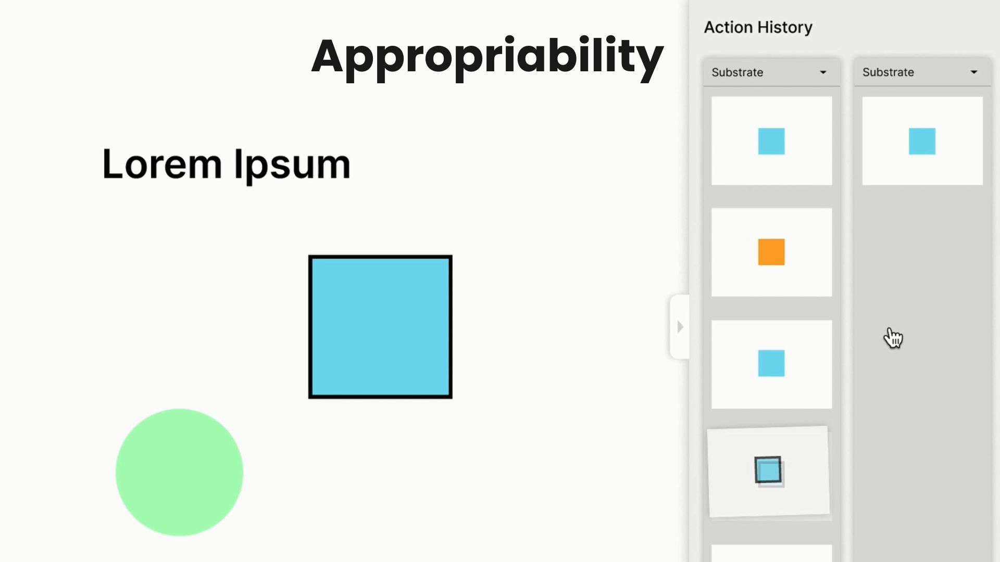

STEPSTRATE
Enhancing Interaction Through Situated Design

Course & Academic Context
This project was developed as part of the Fundamentals of Situated Interaction course, focusing on UX design and interaction principles based on the six key notions of situated interaction. The course explores how digital systems can better support user workflows by integrating contextual awareness, action-based interactions, and human-computer partnerships.
Sector & Relevance
The project is situated in the fields of Human-Computer Interaction (HCI) and UX/UI Design, particularly in the study of situated interaction, which emphasizes how digital interfaces can adapt dynamically to users' real-world contexts.
Project Overview
STEPSTRATE is a redesign of the Google Slides Version History tool, aimed at improving discoverability, transparency, and usability. The original version history feature presents several challenges, including:
- Limited interaction and modification options
- Poor discoverability, making past versions difficult to navigate
- Low transparency in how history is saved
- Rigid, timestamp-based snapshots instead of contextual changes
STEPSTRATE introduces a more intuitive and action-based approach to version management, enhancing user control and adaptability.
Key design improvements:
- Action-based history tracking instead of rigid snapshots
- Instrumental interaction to make changes more intuitive and adaptable
- Feedforward design for better discoverability and predictability
- Persistent customization to allow users to modify history settings

Research & Development Process
1. Understanding User Pain Points
- Conducted an analysis of existing version history tools
- Identified key usability issues, such as lack of transparency and flexibility
2. Redesigning Interaction with Situated Principles
- Shifted from timestamp-based history to action-based tracking
- Improved discoverability and feedback mechanisms
- Introduced customization options for different workflows
3. Demonstration & Testing
- Developed a concept prototype showcasing improved interaction
- Created a video demonstration highlighting StepStrate's key features
- Explored potential future expansions, such as community-shared version histories

Challenges & Key Insights
• Balancing Transparency with Simplicity
While increasing transparency in version history is beneficial, too much information can overwhelm users. The solution was to introduce progressive disclosure, allowing users to reveal more details as needed.
• Enhancing Discoverability Without Complexity
Users often struggled to find or navigate previous versions. By incorporating feedforward design and clearer affordances, STEPSTRATE made past versions more intuitive to access.
• Customization vs. Standardization
Some users preferred a simple history view, while others wanted more control. STEPSTRATE introduces modifiability, allowing users to tailor the tool to their needs without unnecessary complexity.

Professional Impact & Learnings
This project demonstrates expertise in:
- Interaction design and UX research – analyzing usability challenges and proposing user-centered design solutions
- Situated interaction principles – designing interfaces that adapt to user context and workflow needs
- Prototyping and conceptual testing – developing interactive tools that improve digital work environments
StepStrate showcases how situated interaction principles can improve everyday digital tools, making them more intuitive, adaptable, and user-friendly.

STEPSTRATE Full Video Demo